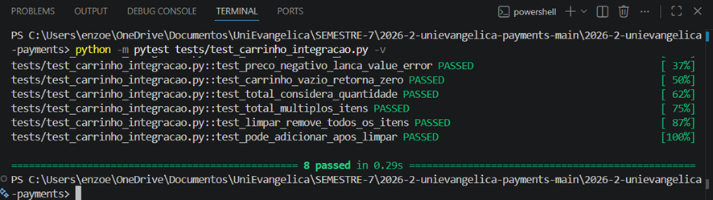

Esse é máximo que consegui colocar no git
2026-2-unievangelica-payments-main/2026-2-unievangelica-payments/tests/test_carrinho_integracao.py
Esse é o link onde está o test_carrinho_integracao.py:
https://github.com/Enzo-Eduardo/https-github.com-Enzo-Eduardo-2026-2-unievangelica-payments/blob/main/2026-2-unievangelica-payments-main/2026-2-unievangelica-payments/tests/test_carrinho_integracao.py
O :memory: cria um banco SQLite totalmente isolado na RAM para cada teste; como a conexão é recriada via fixture e destruída ao final, nenhum estado vaza entre testes. Isso elimina a necessidade de Mocks, pois usamos uma dependência real, porém efêmera. Diferente de Stub/Mock (que simulam comportamento), aqui validamos a integração real com o banco, garantindo maior fidelidade ao comportamento em produção.
